0.455541

0.494828

0.528659

0.547412
0.586238

0.630151
0.638533

0.646080
0.648787
0.651842
| Target image | 0.455541 | 0.494828 | 0.528659 | 0.547412 | 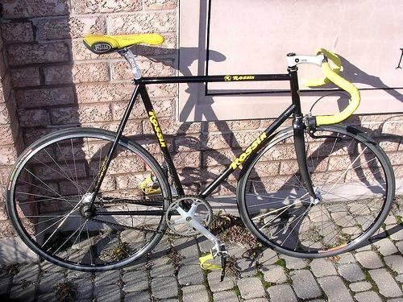 0.586238 | 0.630151 | 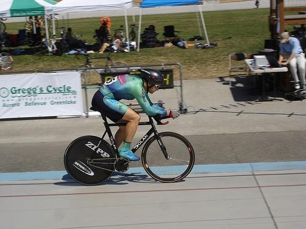 0.638533 | 0.646080 | 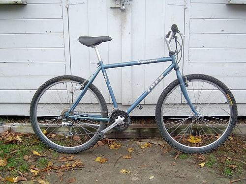 0.648787 | 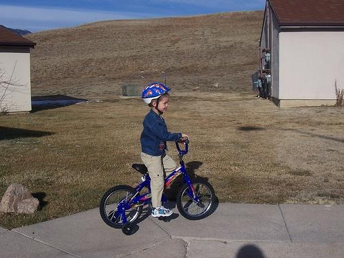 0.651842 |
Target image |  2606.938477 |  2336.893555 | 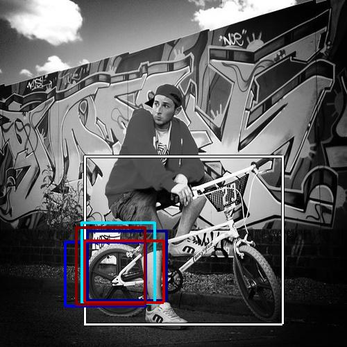 2061.442871 |  1358.583252 | 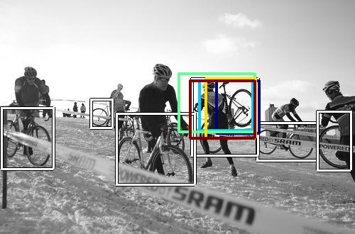 1301.121094 | 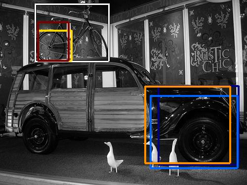 1277.132812 |  1263.497070 | 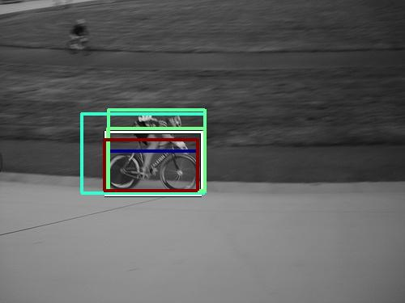 1237.285522 |  1199.359497 |  1176.597290 |
| Target image 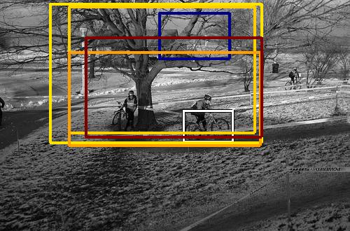 |  1613.125000 |  1126.432129 | 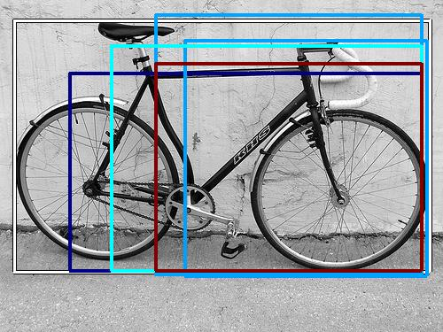 1069.666992 |  1010.836060 | 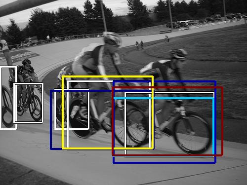 990.766541 | 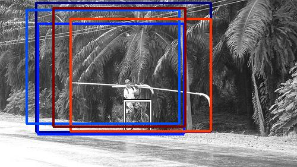 929.749634 | 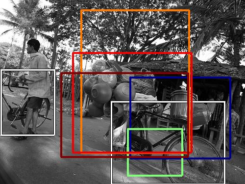 908.434204 | 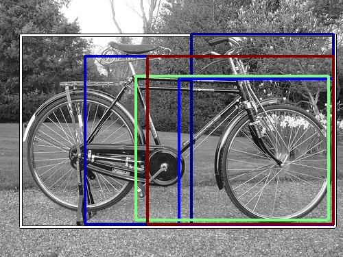 900.665100 | 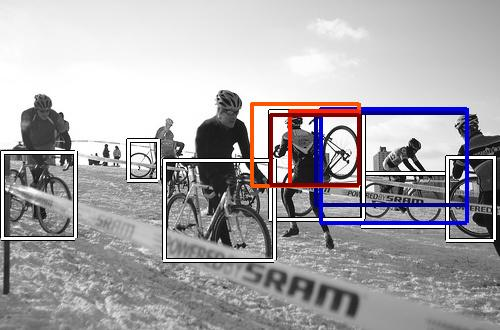 898.345825 | 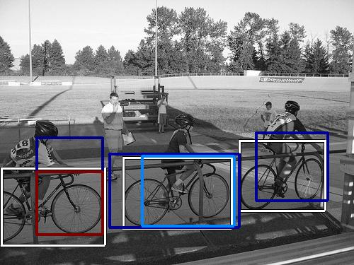 840.376282 |
| Target image 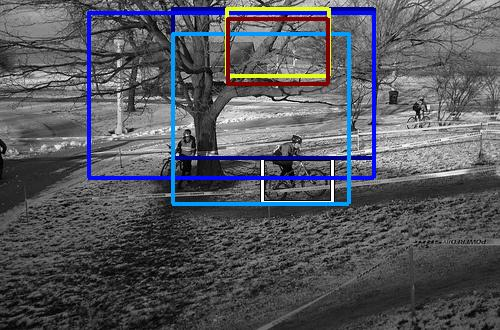 | 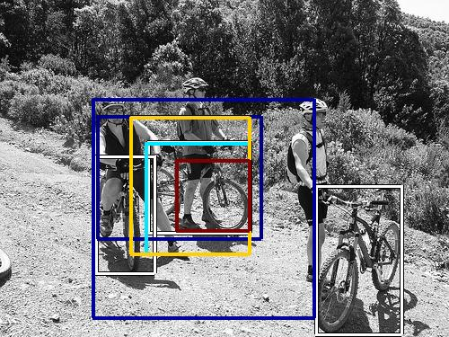 1866.952148 | 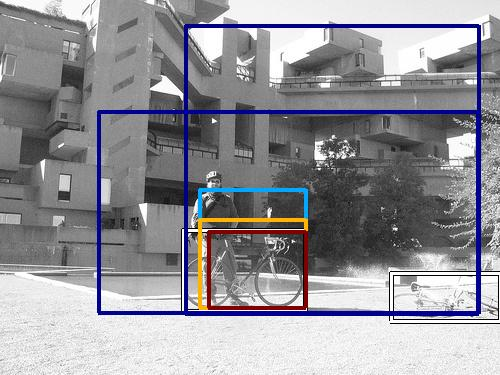 1594.143677 |  1533.977905 |  1229.008789 |  1171.146851 | 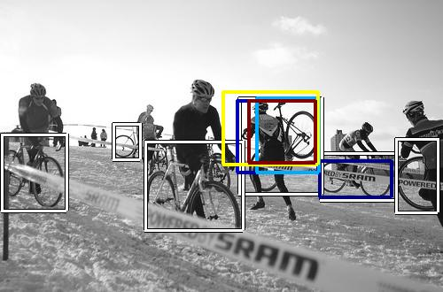 1071.864990 |  1059.164551 |  1056.725220 | 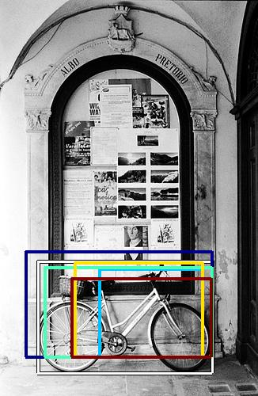 981.823914 |  767.873047 |
| Target image 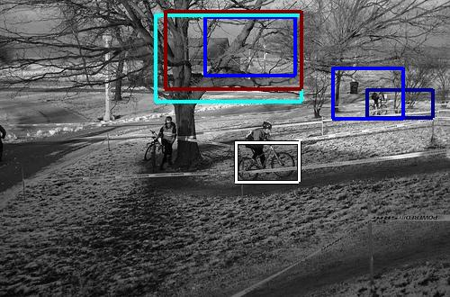 |  1847.594604 | 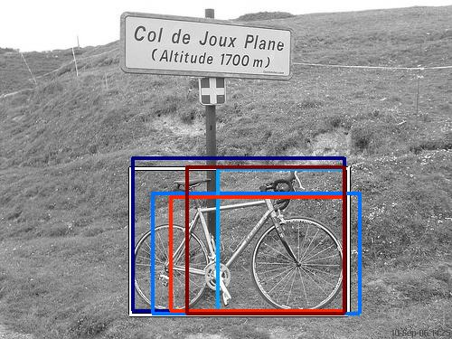 1709.424194 | 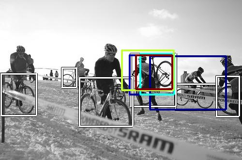 1652.080566 |  1573.648438 | 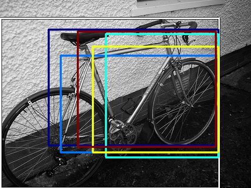 1400.254517 | 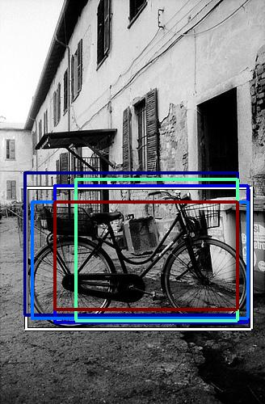 1396.814209 | 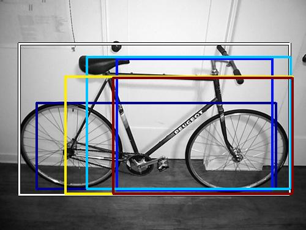 1377.504272 |  1293.672729 | 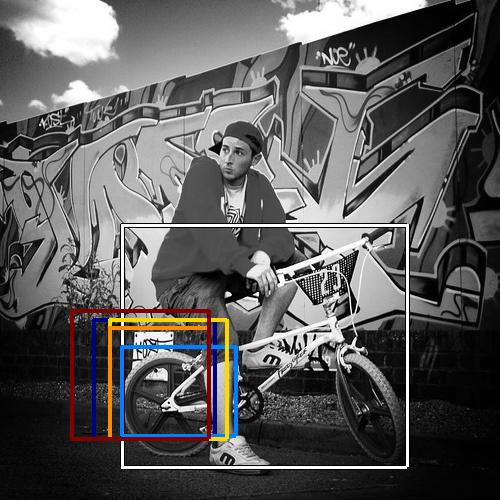 1288.164185 | 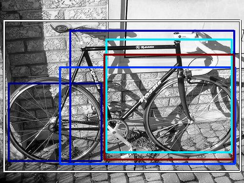 1262.188721 |